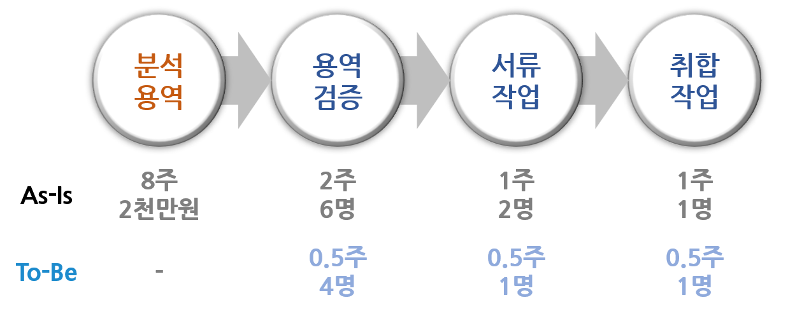
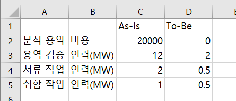
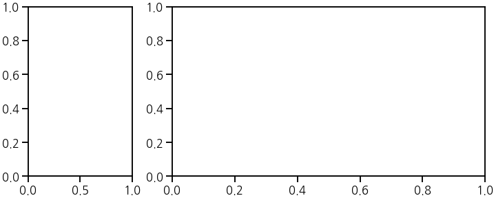
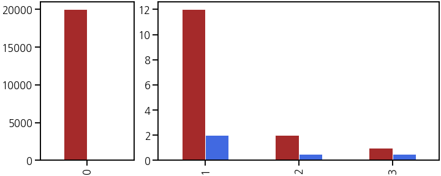
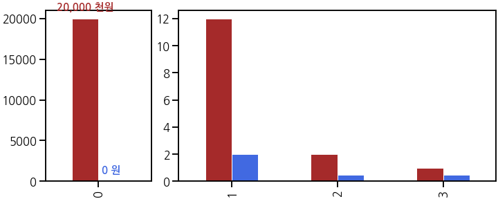
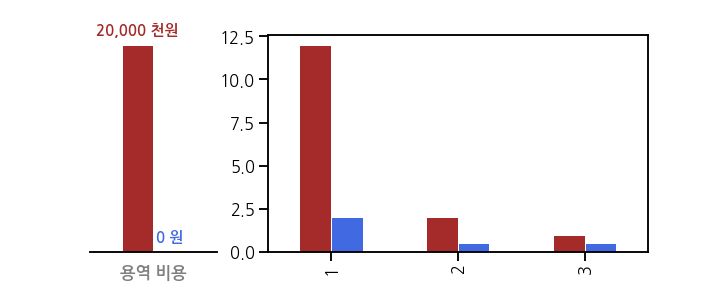
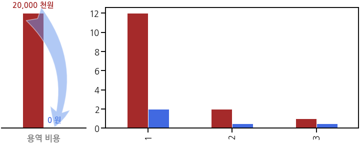
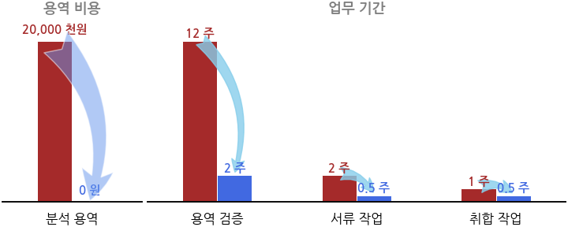
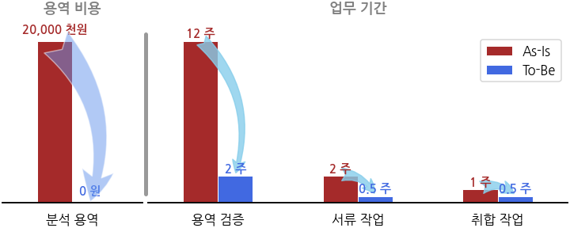

- RPA(Robotic Process Automation: 업무 자동화) 과제를 하려고 합니다.
- RPA를 적용하면 효용이 얼마나 좋은지를 설득하기 위한 그림을 그립니다.
- RPA 도입 전과 후를 비교하는 그림을 그려서 보여줍시다.
1. 행정 업무

어떤 가상의 데이터 관련 행정 업무가 있다고 합시다.
현재는 총 2천만원의 용역비를 포함해 12주가 걸립니다. 수작업이기 때문입니다.
여기에 RPA를 적용하면, 용역비가 없어지고 이어지는 작업도 훨씬 짧게 걸립니다.
서류 작업과 취합 작업도 단순 반복 작업에서 검증으로 업무 성격이 바뀝니다.
보고서나 기획서등에서 이 훌륭한 업무를 어필하고 싶습니다.
일단 엑셀로 정리해보니 이렇습니다. 전달은 되는데 아쉽습니다.

2. 시각화
2.1. 용역 비용 & 인력
- RPA 효과는 크게 두 가지입니다. 하나는 용역 비용, 하나는 인력
- 인력도 man-week (MW)으로 정리했기 때문에 담당자의 연봉을 적용하면 비용 산정이 됩니다.
- 하지만 여기선 용역은 용역, 인력은 인력으로 나누어 그리기로 합니다.
- 항목 수에 따라 용역 비용과 인력이 그려질 공간을 1:3의 비율로 분할합니다.
1
fig, axs = plt.subplots(ncols=2, figsize=(10, 4), gridspec_kw={"width_ratios":[1, 3]})
2.2. 용역 비용
- 왼쪽 공간에 RPA 적용 전 2천만원이 들어간 용역 비용과 적용 후 0원이 된 것을 비교하여 그립니다.
- 이럴 때는 grouped bar plot이 제격입니다.
- 용역 비용 뿐 아니라 다른 모든 항목을 비교할 것이기 때문에 RPA 전과 RPA 후 비교에 일관성이 필요합니다.
- 적용 전과 후를 “brown”과 “royalblue”로 표기합니다.
- 또한, grouped bar plot은 pandas가 더 편합니다.
- pandas DataFrame에서 그림을 그릴 부분만
.loc[]를 사용해 데이터를 한정하고, .plot.bar()를 사용해 groupled bar plot을 그립니다.cs = ["brown", "royalblue"]과color=cs를 입력하면 적용 전과 후 색이 차례로 입혀집니다.1
2
3
4
5
6
7
8
9
10
11
12# data 읽기
rpa = pd.read_excel("RPA_comparison.xlsx")
# visualization
fig, axs = plt.subplots(ncols=2, figsize=(10, 4), gridspec_kw={"width_ratios":[1, 3]}, constrained_layout=True)
cs = ["brown", "royalblue"]
# 용역 비용
rpa.loc[[0]].plot.bar(ax=axs[0], lw=1, ec="w", legend=False, color=cs)
# 인력
rpa.loc[1:].plot.bar(ax=axs[1], lw=1, ec="w", legend=False, color=cs)
2.3. Annotation
가장 중요한 틀이 갖춰졌습니다.
이제 ticks, ticklabels 등을 다듬으면 쓸만한 그래프가 될겁니다.
하지만 그 전에, 데이터를 직설적으로 알려주는 장치를 하려고 합니다.
위 코드 아래에 코드를 덧붙여 bar 위에 데이터를 출력합니다.
1
2
3
4
5
6
7
8
9
10
11
12
13# 용역 비용
xs, ws, hs = [], [], []
for p, c in zip(axs[0].patches, cs):
x, w, h = p.get_x(), p.get_width(), p.get_height()
xs.append(x)
ws.append(w)
hs.append(h)
cost = format(int(h), ',')
if h > 0:
cost = f"{cost} 천원"
else:
cost = f"{cost} 원"
axs[0].text(x+w/2, h+1000, cost, ha="center", fontsize="small", fontweight="bold", color=c, zorder=3)
왼쪽 Axes를 구성하는 두 막대의 위치, 너비, 높이를 뽑아내 글자를 입혔습니다.
일반적으로 금액을 천원단위로 표현하기 때문에 일부러 엑셀 파일부터 천원으로 끊었습니다.
2.4. Spines and Ticks
- 이제 y축이 없어도 데이터가 잘 전달됩니다.
- y축과 함께 네모난 테두리(spines)를 없애버립시다.
- x축 눈금은
tick_params()를 사용해 폭을 0으로(width=0) 만듭니다. - 그런데 xticklabel은 여기 말고도 오른쪽 Axes에도 세 개나 더 적용해야 됩니다.
font_label이라는 이름의 dictionary type 매개변수를 만들어 적용합니다.1
2
3
4
5
6# Spines and Ticks
axs[0].spines[["left", "top", "right"]].set_visible(False)
axs[0].set_yticks([])
font_label = {"color":"gray", "fontweight":"bold"}
axs[0].tick_params(axis="x", width=0)
axs[0].set_xticklabels(["용역 비용"], **font_label, rotation=0)
2.5. Arrow
matplotlib: Connection styles for annotations
matplotlib: Annotation arrow style reference
- RPA 적용 전후는 나왔는데 그림에서 알아보기 어렵습니다.
- RPA를 적용했더니 확 비용이 확 떨어진다는 느낌의 화살표가 있으면 좋을 것 같습니다.
- Matplotlib에서 멋진 화살표를 만들기에는
Axes.annotate()가 가장 좋습니다. - “arrowstyle”:”fancy”와 “connectionstyle”을 이용해 다이나믹한 화살표를 그립니다.
1
2
3
4# Arrow
axs[0].annotate("", xy=(xs[1]+w/2, hs[1]+w/2), xytext=(xs[0]+w/2, hs[0]+w/2),
arrowprops={"arrowstyle":"fancy", "ec":"w", "fc":"cornflowerblue", "alpha":0.5,
"connectionstyle":"arc3,rad=-0.3", "mutation_scale":100})
2.6. 인력에도 동일하게
- 용역 비용에 적용한 사항들을 인력에도 동일하게 적용합니다.
- 아까 왼쪽 Axes의 xticklabel에 넣었던 용역 비용은 title이 더 잘 어울리는 것 같습니다.
- 내용을 올리고, xticklabel은 새롭게 분석 용역이라고 넣습니다.
- 오른쪽에도 여기에 대응되도록 용역 검증, 서류 작업, 취합 작업을 넣습니다.

2.7. 비용과 기간 사이 칸막이
- 마지막 작업입니다.
- 왼쪽과 오른쪽 구간을 나누는 막대를 하나 넣습니다.
matplotlib.lines.Line2D객체를 사용해 선을 그립니다.- 양 끝점의 좌표를 입력해야 하는데 Figure 전체의 상대 좌표를 사용해
[0.255, 0.255], [0.15, 0.85]를 입력합니다. - 양 끝을 둥글게 만들고자
solid_capstyle = "round"를 입력했습니다. - 두 Axes 사이 공간에 그려야 하는 그림이기 때문에
fig.add_artist()로 추가합니다.1
2
3
4
5
6from matplotlib.lines import Line2D
line = Line2D([0.255, 0.255], [0.15, 0.85], linewidth=5, solid_capstyle="round", color="0.6")
fig.add_artist(line)
axs[1].legend()
3. 활용
- 이렇게 정리된 그림은 적절한 표, 근거 자료와 함께 보고서와 ppt에 삽입하면 좋습니다.
- 그냥 파워포인트에서 그리면 더 쉽지 않냐고 하실 수 있습니다.
- 경험상 이런 일은 현업 부서에서 수치가 수차례 변경되는 것이 일반적이고, 실제로 열번쯤 바뀐 것 같습니다.
- 일일이 새로 그렸다면 너무 힘들었을테지만 코드로 그린 덕택에 그때마다 데이터만 바꿔 끼웠습니다.
위 그림은 실제로 최근 있었던 한 공모전에서 서류 작성과 발표 자료에 사용했습니다.
데이터는 제가 접한 실제 사례와 다르게 바꾸었습니다만, 전반적인 틀은 살렸습니다.
전체 코드는 아래와 여기에서 확인할 수 있습니다: Colab 링크
여러분께도 좋은 결과가 있기를 바랍니다.
1 | import numpy as np |